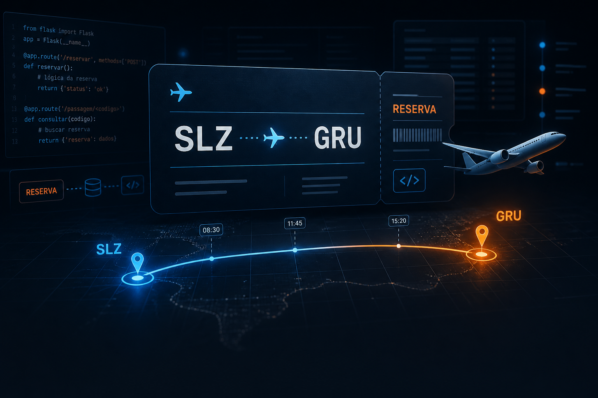

app.py
@app.route("/evoluir")
def aprender():
teoria = entender()
pratica = construir_sistemas_reais()
return sucesso_no_mercado<BUILD_REAL_APPS />
Uma jornada prática por Python e Flask onde você deixa de ser um copiador de código e se torna um desenvolvedor que pensa, planeja e cria aplicações que o mercado exige.
Você está entrando durante a fase de lançamento da formação. Novos sistemas e conteúdos continuarão sendo adicionados à jornada.
app.py
@app.route("/evoluir")
def aprender():
teoria = entender()
pratica = construir_sistemas_reais()
return sucesso_no_mercado$ python jornada.py
01. <PROJECT />
Você não aprende apenas a sintaxe da linguagem. Você entende a lógica enquanto resolve problemas complexos com fluxo, regras de negócio, banco de dados e validações reais.
Autenticação, relatórios gerenciais e regras de jornada de trabalho.

Gestão de voos, controle de status e fluxo complexo de check-out.
Criptografia de dados, validação antifraude e organização de resultados.
Você não fica preso aos mesmos exercícios encontrados em qualquer playlist.
Cada conceito aparece porque algum projeto precisa dele para funcionar.
Ideias abstratas são traduzidas para situações mais simples de visualizar.
Você começa no Bronze e avança até o Diamante com etapas organizadas.
<METHOD />
Durante as aulas, utilizo comparações e analogias para aproximar conceitos técnicos de situações mais fáceis de visualizar. Depois dessa primeira ponte, avançamos para a explicação técnica e para o código real.
<EXTENSIONS.PY />
A analogia começa com uma caixa onde ficam ferramentas importantes da aplicação. Em seguida, essa imagem vira o arquivo extensions.py, onde recursos como banco, proteção e autenticação são preparados para uso no projeto Flask.
A ferramenta utilizada para trabalhar com o banco de dados.
Uma ferramenta responsável por adicionar proteção CSRF à aplicação.
A ferramenta utilizada para gerenciar a autenticação com Flask-Login.
from flask_sqlalchemy import SQLAlchemy
from flask_login import LoginManager
from flask_wtf.csrf import CSRFProtect
db = SQLAlchemy()
login_manager = LoginManager()
csrf = CSRFProtect()<DEMO />
Dê o play abaixo e veja na prática como transformamos conceitos difíceis em algo óbvio.
03. <LEVEL />
Bronze, Prata, Ouro e Diamante não são apenas nomes. Eles organizam a experiência para você perceber base, domínio, robustez e refinamento.
Fundamentos, primeiros sistemas e contato inicial com aplicações reais.
Projetos intermediários, organização, lógica e sistemas mais completos.
Arquitetura, banco de dados, autenticação e regras mais complexas.
Testes, segurança, decisões de arquitetura e acabamento profissional.
04. <PROJECT_GALLERY />
O Sistema de Registro de Ponto já faz parte da jornada. Os próximos sistemas aparecem como estão: em construção, sem promessa falsa e sem esconder o momento de lançamento.
Gerenciamento e registro de ponto com usuários, autenticação, relatórios e banco de dados.
Busca, compra e gerenciamento com relações entre usuários, viagens, reservas e classes.
Cadastro de candidatos, validação de votos, apuração e organização do resultado final.
// construa para entender
Por isso, cada projeto é usado como uma ferramenta para entender o que existe por trás das linhas de código.
05. <WHO_AM_I />
Eu já estive exatamente onde você está. Cansado de ver aulas de programação onde o professor fala difícil apenas para parecer inteligente, enquanto eu não conseguia aplicar nada na prática.
Criei o Python Flask Lab com uma única missão: ser a ponte entre o básico que todo mundo ensina e o mundo real que o mercado exige, usando uma didática que o seu cérebro realmente consegue absorver.
06. <CHECKOUT />
Aproveite a condição de lançamento antes que novos módulos sejam adicionados e o valor seja reajustado.
Pagamento 100% Seguro
Se você entrar no Python Flask Lab, assistir às aulas, tentar construir os projetos e, por qualquer motivo, achar que a minha didática não é para você, basta me enviar 1 e-mail.
Devolvo 100% do seu dinheiro no mesmo dia. Sem perguntas chatas e continuamos amigos. O risco está todo nas minhas costas.

O e-book é um material independente dedicado ao projeto de registro de ponto, com uma abordagem mais aprofundada, exercícios para praticar, conteúdos extras e material complementar.
Produto vendido separadamente do curso.
08. <CLARITY />
Jornada completa, projetos diversos, fundamentos, Flask, banco de dados, web e progressão Bronze → Diamante.
Material vendido separadamente, específico sobre o Sistema de Registro de Ponto, com aprofundamento, exercícios e extras.
09. <FAQ />
Respostas preparadas para edição conforme regras finais de acesso, pagamento e pré-requisitos.
[DEFINIR PRÉ-REQUISITOS REAIS]. A proposta é guiar a evolução desde a base até projetos mais completos.
Flask faz parte do desenvolvimento dos sistemas, mas o aprendizado envolve Python, banco de dados, web, organização de código, lógica e outros conceitos.
Sim. Essa é uma das propostas centrais: antes de decorar o código, entender o que ele está fazendo.
A jornada começa com fundamentos e primeiros sistemas, avança para projetos intermediários, passa por aplicações robustas e chega a refinamentos como testes, segurança e arquitetura.
[DEFINIR PLATAFORMA DE PAGAMENTO]. O link pode ser alterado no arquivo js/script.js.
Não. O e-book é um produto independente, vendido separadamente, dedicado ao Sistema de Registro de Ponto.
deploy_your_knowledge()
Uma jornada prática, visual e progressiva para transformar curiosidade em projetos completos.